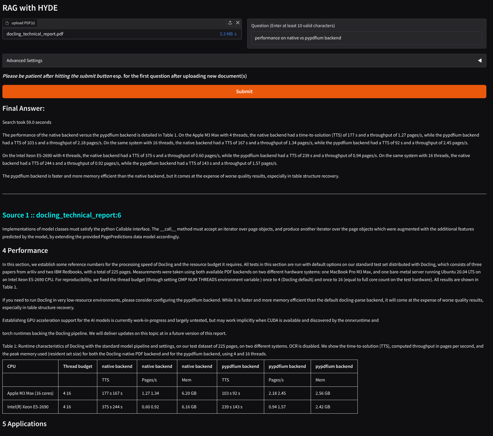

How HyDE’s simulated document representations combined with query rewrites and RRF enhance retrieval quality in RAG systems
EDA
PyTorch
NLP
GenAI
LLMs
RAG
HyDE
RRF
Ranking
Information Retrieval
Published
October 25, 2025
Ever wished your search engine could read your mind? In this post, we’ll dive into how Retrieval-Augmented Generation (RAG) can come close — by expanding user queries into hypothetical documents, refining them through query rewriting, and fusing results intelligently using Reciprocal Rank Fusion (RRF). Together, these techniques transform ordinary retrieval into a contextual, knowledge-aware reasoning process.
Retrieval-Augmented Generation (RAG) is an architecture that combines two powerful components: retrieval and generation. Instead of relying solely on what a language model “remembers,” RAG retrieves relevant documents from an external knowledge base and uses them to generate more accurate, up-to-date, and context-aware responses.
It’s particularly useful when dealing with dynamic or domain-specific information — for example, enterprise knowledge bases, customer support documentation, or academic research. By grounding responses in retrieved facts, RAG reduces hallucinations and enhances factual accuracy, making it an ideal solution for any use case where the underlying data changes frequently or is too large to fit into a model’s internal memory.
Limitations of traditional RAG based systems
While RAG sounds elegant in theory, traditional implementations often struggle in practice. The retrieval step depends heavily on keyword or embedding similarity, which can miss relevant documents when the query is vague, abstract, or phrased differently from the source text. This leads to poor recall — the model simply doesn’t find the right context to reason from.
Additionally, many RAG systems fail under semantic drift, long-tail queries, or domain-specific jargon. Even when relevant information exists, it may rank too low or be drowned out by irrelevant results. As a result, the generation step produces confident but inaccurate answers — defeating the very purpose of retrieval augmentation.
Enter 🔥HyDE🔥
Hypothetical Document Embeddings
Hypothetical Document Embeddings (HyDE) is a retrieval technique that addresses a key weakness of traditional RAG systems—poor performance on vague or under-specified queries. Instead of retrieving directly from the raw query, HyDE first uses a language model to generate a short, plausible “hypothetical document” answering the query. This synthetic passage is embedded and used to retrieve semantically similar real documents from the knowledge base.
By transforming queries into document-like representations, HyDE aligns retrieval with document embedding space, allowing contrastive encoders (such as Contriever) to match these hypotheticals to relevant corpus entries. This approach yields strong zero-shot retrieval, especially for open-ended, exploratory, or low-context queries where users may lack precise keywords.
Query Generation/ReWriting
Before applying HyDE, it’s often useful to rewrite user queries to make them clearer and more retrieval-friendly. In real-world scenarios, users tend to ask compound or referential questions such as What is XXX and how does it impact sales?. Instead of treating this as one query, we can split it into multiple focused sub-queries — for example: ['What is XXX?', 'How does XXX impact sales?'].
During this rewriting step, an LLM can also resolve demonstrative pronouns (like this, that, it, or they) in follow-up questions, replacing them with explicit references from earlier parts of the query. This process ensures that each rewritten query is self-contained, semantically clear, and ready for more effective retrieval downstream.
This stage is called query generation or query rewriting, and it acts as a smart preprocessing layer before the HyDE step. By running HyDE on each rewritten sub-query, we get richer hypothetical contexts and significantly better retrieval accuracy for complex, multi-part user inputs.
Reciprocal Rank Fusion
Even after applying Query Rewriting and HyDE, retrieval isn’t always perfect. Each rewritten or hypothetical query might surface slightly different sets of relevant documents — some overlap, some don’t. For example, one version of the query might capture documents with broader context, while another highlights highly specific details. Choosing just one retrieval run risks losing valuable information.
In real-world RAG systems, no single retrieval method or query formulation is universally optimal. Dense embeddings, keyword search, and HyDE-generated queries each offer unique perspectives on relevance. What we need is a way to combine their strengths — to merge the best results from multiple retrieval strategies into a unified, high-quality ranking.
That’s where Reciprocal Rank Fusion (RRF) comes in.
It is a simple yet powerful ranking aggregation technique designed to fuse multiple retrieval results into one coherent ranked list. Instead of trusting one retrieval run, RRF looks across all of them, giving higher priority to documents that appear near the top across lists.
Mathematicaly, it sums the reciprocals of rank positions, rewarding items consistently ranked highly. This makes RRF especially useful in hybrid or multi-source retrieval systems—such as combining embeddings, keyword searches, or reformulations—where it boosts recall, stability, and robustness for more reliable results.
Powerful Trio
When used together, Query Rewriting, HyDE, and RRF form a highly effective multi-stage RAG pipeline.
Query Rewriting ensures that each user query (or sub-query) is explicit and context-independent.
HyDE then generates a hypothetical answer for each rewritten query, enriching the semantic representation used for retrieval.
Finally, RRF fuses the retrieval results from all rewritten and HyDE-generated queries into a unified, ranked list of documents.
This combination addresses several real-world challenges:
Ambiguity and reference resolution → handled by Query Rewriting.
Sparse or underspecified queries → improved via HyDE’s hypothetical document generation.
Retrieval diversity and ranking stability → enhanced by RRF’s fusion mechanism.
In essence, RRF acts as the final consensus layer, aggregating the best retrieval signals from each query variant. Together, these steps make RAG systems far more resilient, accurate, and context-aware, especially in enterprise or multi-domain settings where queries vary in form and complexity.
Choosing Right Models
Even with a powerful retrieval pipeline built on Query Rewriting, HyDE, and RRF, the system’s overall performance still depends heavily on the embedding model used for retrieval and the LLM used for generation. These are the foundational layers that determine how well our RAG system understands, retrieves, and communicates information.
The embedding model is responsible for mapping both queries and documents into a shared semantic space. If this model isn’t well-aligned with our domain or language, even the best retrieval strategies will struggle — relevant documents might sit far apart in the vector space, leading to poor recall. For example, an English-only embedding model will fail when users query in Spanish or Hindi, or when the document corpus is multilingual. Choosing a multilingual or domain-tuned embedding model ensures that semantically similar ideas are close together, regardless of language or phrasing.
On the generation side, the LLM plays an equally critical role. It needs to interpret the retrieved context correctly, synthesize information fluently, and handle domain-specific or multilingual outputs gracefully. If our users interact in multiple languages, our generation model should either be natively multilingual or supported by a translation layer that preserves meaning without distorting the original intent.
Now that we’re armed with this knowledge, let’s dive into code. The repo is available on github . Feel free to clone it and run this notebook. It is designed primarily to run on Linux with NVIDIA GPU or on Mac with Silicon processors with integrated GPU.
To test our RAG pipeline, we first need a knowledge corpus built from one or more PDFs. Extracting content from PDFs isn’t always straightforward — layouts, tables, and images can make parsing tricky. Two great tools for this are PyMuPDF (or PyMuPDF4LLM) and Docling, each suited for different needs.
⚡ PyMuPDF / PyMuPDF4LLM
PyMuPDF is a fast, lightweight library for PDF text extraction — perfect for CPU environments and large batches of text-heavy documents. Its LLM-optimized variant, PyMuPDF4LLM, adds support for exporting structured Markdown, preserving headings, lists, and tables for easier downstream use.
Pros:
Fast, efficient, and CPU-friendly
Handles simple-to-moderate layouts well
Markdown export with PyMuPDF4LLM fits LLM pipelines
Cons:
Limited accuracy for complex layouts or multi-column designs
Best for: Quick, scalable extraction of mostly text-based PDFs.
🧠 Docling
Docling is a deep-learning–powered PDF parser that excels at handling complex document structures — tables, figures, multi-column text, etc. It can export to plain text or Markdown, producing highly structured, clean outputs. However, it’s heavier and slower, typically requiring GPU support for optimal performance.
Pros:
High-fidelity extraction of structured layouts
Flexible text/Markdown outputs
Cons:
Slower and GPU-intensive
Best for: Complex or visually rich PDFs when GPU resources are available.
📝 Why Extract in Markdown?
Extracting in Markdown strikes the right balance between structure and simplicity. It retains document hierarchy — like headings, lists, and especially tables — that plain text loses, helping LLMs and embedding models better understand context and meaning. Markdown also makes document chunking more coherent, improving retrieval and generation quality downstream.
Let’s take the docling technical report as our PDF to build our corpus. But remember, we can use more than one too.
Note
When run from CLI, we can use gradio where we can directly drop the folder or choose PDF(s) to process.
Since our documents are extracted in Markdown rather than plain text, we need a text splitter that can respect Markdown structure. For this, we use the MarkdownTextSplitter from LangChain’s text splitters module. It allows us to define a chunk_size to control segment length, along with a small overlap to maintain context between chunks.
It’s important to note that with Markdown, the chunk_size serves as an approximation — the splitter avoids cutting through sections or formatting elements to preserve the logical and structural continuity of the text.
As noted earlier, the data is chunked unevenly. We will also empty the cache to offload docling from GPU as we no longer need it by running:
empty_cache()
Load Models
Embedding Model
For our pipeline, we need a lightweight yet high-quality embedding model — one that can generate strong dense vector representations while being efficient enough for local or production use. If our use case mandates it, ideally, the model should be multilingual, capable of producing similar embeddings for semantically similar text across different languages. This is crucial because users might upload documents in one language and ask questions in another, or even provide multilingual documents within the same corpus.
After experimenting with several variants, I chose Qwen3-Embedding, which strikes a great balance between performance, efficiency, and multilingual capability. For local deployment, I’ve settled on the Qwen3-Embedding-0.6B model — with a maximum embedding dimension of 1024. It performs exceptionally well for most workloads, though you can always switch to a larger variant (e.g., via the Hugging Face Spaces) if you need more capacity or precision.
Text Generation Model
For the text generation step, I opted for Qwen3-4B-AWQ due to its strong reasoning abilities, instruction-following skills, agent capabilities, and multilingual support. It also offers a generous context window of 32,768 tokens, which is ideal for handling long documents or multi-section queries. AWQ (Attention Aware Quantization) preserves a small fraction of the weights that are important for LLM performance to compress a model to 4-bits with minimal performance degradation. Therefore we can be able to load huge models on limited GPU RAM that are otherwise impossible.
Smaller variants proved less effective: the 0.6B model was too weak to generate meaningful answers, and the 1.7B model was only partially reliable. The 4B version, on the other hand, though not perfect, consistently produced accurate results across most queries.
A key factor contributing to this performance was the Markdown-format PDF extraction, especially when done via Docling, which preserved document structure and context, allowing the model to reason over the content more effectively.
We’ll define a few model combinations to use depending on host platform’s capabilities.
MODEL_COMBOS = {"linux": {"embed_model": "Qwen/Qwen3-Embedding-0.6B","gen_model": "Qwen/Qwen3-4B-AWQ", },# feel free to replace with any ??B-MLX-?bit versions from Qwen3 Collection at:# https://huggingface.co/collections/Qwen/qwen3-67dd247413f0e2e4f653967f"mac": {"embed_model": "Qwen/Qwen3-Embedding-0.6B","gen_model": "Qwen/Qwen3-4B-MLX-4bit", },"mac_mid": {"embed_model": "Qwen/Qwen3-Embedding-0.6B","gen_model": "Qwen/Qwen3-4B-MLX-6bit", },"mac_high": {"embed_model": "Qwen/Qwen3-Embedding-0.6B","gen_model": "Qwen/Qwen3-4B-MLX-8bit", },# models to load on HF Spaces # HF-low is same as `linux-local`"HF-mid": {"embed_model": "Qwen/Qwen3-Embedding-0.6B","gen_model": "Qwen/Qwen3-8B-AWQ", },"HF-high": {"embed_model": "Qwen/Qwen3-Embedding-4B","gen_model": "Qwen/Qwen3-14B-AWQ", },}
Now, we load the embedding & generative models based on one of the combination keys above.
Now that we have the input data setup, it’s time to index them. We shall use FAISS as it’s efficient & fast (esp. if you have a GPU). Since we’re using datasets, adding a faiss index over a column is pretty simple.
ds.add_faiss_index("embeddings", metric_type=faiss.METRIC_INNER_PRODUCT);# , device=0 if (torch.cuda.is_available() or torch.mps.is_available()) else None)
Generate queries
Now that we have the data and the models setup, time to process user queries. Let’s define a function that handles that.
queries = ["tell me about cloud bursts","how to ride a unicorn",]
resp = generate_text( tok, gen, queries, model_name=GEN_MODEL_NAME, system_prompt="You are a funny standup comedian and reply only in one liner jokes",)
resp[0]
'A cloud burst is like a thunderstorm that’s so intense, it could make a cloud cry.'
resp[1]
"Just follow the rainbow and pretend you're not scared of the hooves."
Great! Notice that we can give multiple queries in one go which comes handy during batch processing.
Retrieve results from corpus
Prompts
Because our model understands system and user prompts, we can set the context/role depending on what we want. Let’s load them.
withopen("src/prompts.yaml") as fl: prompts = yaml.safe_load(fl)
First we define a function to make different variants of the user query. We provide a few examples in the prompt.
Query Variations
query ="evolution of solar energy costs in Europe"q_variants = make_query_variants( tok, gen, query, prompts["variants"], n=2, model_name=GEN_MODEL_NAME)q_variants
['evolution of solar energy costs in europe',
'how has the cost of solar energy changed in different european countries?',
'how have solar energy prices changed in europe over the years?',
'what factors have influenced the evolution of solar energy costs in europe?',
'what has been the trend in solar energy costs across europe?',
'what is the historical development of solar energy costs in europe?']
Nice! LLMs work best by role playing & examples and therefore we have given some through system prompt. Look at the variants section of the prompts.yaml file to learn more.
we always preserve the original query just in case the model loses (or deviates too far from) the original intent in its generated variants.
Query Generation/Rewrite
We now transform the query into a json with two parts search & tasks. Search contains one or more queries based on the original query that are transformed & expanded (if applicable) to be made within the context provided. Tasks lists one or more actions to take after the search is performed. Sometimes there’d be overlap in between them but that’ll be taken care during preprocessing.
query ="draft an email on summary of sales in the last quarter"transform_query(tok, gen, query, prompts["rewrite"], model_name=GEN_MODEL_NAME)
{'search': ['summary of sales in the last quarter',
'sales summary for the previous quarter'],
'tasks': ['draft an email based on the sales summary',
'send the drafted email to the relevant recipient']}
Now just like we derived many variations of the original user query earlier, we shall do the same for each of the above search queries as well. We append the tasks at the last of the user prompt.
['draft an email on summary of sales in the last quarter',
'how did sales performance compare to the previous quarter',
'what is the sales overview for the quarter that just ended',
'your name']
tasks
['draft an email', 'send the email to the relevant team']
Tip
Because we used a multilingual language model, this should also work for other languages
query ="Was ist die Geschichte der Autos in Deutschland?"queries, tasks = aggregate_queries_and_tasks( tok, gen, query, prompts["rewrite"], prompts["variants"], temperature=0.7, n_variations=2, gen_model_name=GEN_MODEL_NAME)
queries
['was ist die geschichte der autos in deutschland?',
'wie hat sich die autoindustrie in deutschland im laufe der zeit entwickelt',
'wie verändert sich die produktion von autos in deutschland']
tasks
[]
HyDE generation
Let’s now pick a query that has something to do with our corpus to create hypothetical documents and its embeddings.
query ="How good is table recognition in docling?"queries, tasks = aggregate_queries_and_tasks( tok, gen, query, prompts["rewrite"], prompts["variants"], temperature=0.7, n_variations=3, gen_model_name=GEN_MODEL_NAME)queries
['how good is table recognition in docling?',
'how does docling perform in identifying tables from various document types',
'how effective is table recognition in document processing',
'what is the accuracy of table recognition in document analysis']
Instead of passing each query, we send all in one go as a batch…
CPU times: user 11.1 s, sys: 287 ms, total: 11.4 s
Wall time: 11.4 s
len(hyde_docs)
4
Let’s see some samples…
for doc in hyde_docs[:2]:print(f"{'='*30}\n{textwrap.fill(doc, width=80)}")
==============================
Docling is a document processing tool that includes features for recognizing
tables within documents. According to its documentation and user reviews,
Docling's table recognition capability is generally considered adequate for most
use cases, including extracting table data into structured formats. The tool
uses machine learning models to identify and parse tables, which works well for
standard formats such as CSV, TSV, and HTML. However, users have reported that
its performance can vary depending on the complexity and formatting of the
original document. While it is not as advanced as some specialized tools in
handling highly irregular or complex table structures, Docling is suitable for
general-purpose table extraction tasks. Its effectiveness is often compared
favorably to other document processing tools in terms of accuracy and ease of
use.
==============================
Docling is a document processing tool designed to extract and structure
information from various document types, including tables. According to a 2023
evaluation by DocumentAI, Docling demonstrated strong performance in identifying
and extracting tables from common document formats such as PDFs, Word documents,
and Excel files. The tool successfully recognized tabular data in both
structured and unstructured formats, with an accuracy rate of over 92% in
controlled testing environments. However, its performance varied when processing
highly formatted or scanned documents, where table recognition was less
consistent. Users have reported that Docling's table detection is reliable for
standard business documents but may require additional preprocessing for complex
or non-standard layouts. The tool is part of a broader suite of AI-driven
document processing solutions aimed at improving data extraction efficiency.
We now split it into chunks and get its embeddings; same as what we did for our corpus.
Great! We got all the top k_per_variant matching chunks for each of the hyde in one go. The above array shows their corresponding similarity scores with each of the query embedding. We shall also now retrieve the unique ids of the corresponding chunks to rank them.
indices = [x["id"] for x in matches.total_examples]indices
As part of Docling, we initially release two highly capable AI models to the open-source community, which have been developed and published recently by our team. The first model is a layout analysis model, an accurate object-detector for page elements [13]. The second model is TableFormer [12, 9], a state-of-the-art table structure recognition model. We provide the pre-trained weights (hosted on huggingface) and a separate package for the inference code as docling-ibm-models . Both models are also powering the open-access deepsearch-experience, our cloud-native service for knowledge exploration tasks.
Layout Analysis Model
Our layout analysis model is an object-detector which predicts the bounding-boxes and classes of various elements on the image of a given page. Its architecture is derived from RT-DETR [16] and re-trained on DocLayNet [13], our popular human-annotated dataset for document-layout analysis, among other proprietary datasets. For inference, our implementation relies on the onnxruntime [5].
The Docling pipeline feeds page images at 72 dpi resolution, which can be processed on a single CPU with sub-second latency. All predicted bounding-box proposals for document elements are post-processed to remove overlapping proposals based on confidence and size, and then intersected with the text tokens in the PDF to group them into meaningful and complete units such as paragraphs, section titles, list items, captions, figures or tables.
Table Structure Recognition
The TableFormer model [12], first published in 2022 and since refined with a custom structure token language [9], is a vision-transformer model for table structure recovery. It can predict the logical row and column structure of a given table based on an input image, and determine which table cells belong to column headers, row headers or the table body. Compared to earlier approaches, TableFormer handles many characteristics of tables, such as partial or no borderlines, empty cells, rows or columns, cell spans and hierarchy both on column-heading or row-heading level, tables with inconsistent indentation or alignment and other complexities. For inference, our implementation relies on PyTorch [2].
The Docling pipeline feeds all table objects detected in the layout analysis to the TableFormer model, by providing an image-crop of the table and the included text cells. TableFormer structure predictions are matched back to the PDF cells in post-processing to avoid expensive re-transcription text in the table image. Typical tables require between 2 and 6 seconds to be processed on a standard CPU, strongly depending on the amount of included table cells.
OCR
Indeed the top most document actually contains the answer to our query. We now wrap it all up in one function!
CPU times: user 19.1 s, sys: 643 ms, total: 19.7 s
Wall time: 19.8 s
i
[4, 7]
Final Aggregated Response
Having all the relevant text pieces to generate a context, we now couple that with the original user query and feed it to our LLM to get a final response. We shall tell what we expect and how, through the system prompt.
Code
def get_filtered_entries(idxs):# We need to drop the index before filtering/selecting the desired indices and re-add it later# Since it's FAISS and we index very little data, it's not noticeable ds.drop_index("embeddings") entries = ds.select(idxs) ds.add_faiss_index("embeddings", metric_type=faiss.METRIC_INNER_PRODUCT)return entriesdef answer(tok, gen, query, idxs, tasks, model_name, max_ctx_chars=32768): total, text, prompt_length =0, "", 10000 sep ="\n\n-----\n\n" tasks =", ".join(tasks) if tasks else"" entries = get_filtered_entries(idxs)for content in entries["chunk"]: ctx =f"{sep}\n\n{content}"if total +len(ctx) +len(tasks) +len(sep) + prompt_length > max_ctx_chars:print("context overflow")break text += ctx total =len(text)# add tasks if any, at the last text +=f"{sep}{tasks}" instruction ="go ahead and answer!" user_query =f"\nq: {query}\n\nctx:{text}"+f"\n\n{instruction}\n\n" resp = generate_text( tok, gen, user_query, prompts["final_answer"], model_name=model_name ) sources =""for idx, entry inenumerate(entries): source =f'<h2 style="color: cyan;">Source {idx +1} :: {entry["file"]}:{entry["chunk_id"]}</h2>' sources +=f"{sep}{source}\n\n{entry['chunk']}"return resp, sources.replace("```", "`")# little wrapper function to retrieve and display resultsdef ask(query): start = time() top_idxs, tasks = retrieve(tok, gen, query.strip(), model_name=GEN_MODEL_NAME) retrieve_end = time()print(f"Retrieval {(retrieve_end - start):.1f} seconds")# we can use `top_idxs` to retrieve the source content if we wish to. answer_start = time() resp, sources = answer(tok, gen, query, top_idxs, tasks, GEN_MODEL_NAME) end = time()print(f"answering took {(end - answer_start):.1f} seconds")returnf"\n(_Whole search took {(end - start):.1f} seconds_)\n\n# Final Answer:\n{resp}{sources}"
Let’s see what the model answers…
query
'How good is table recognition in docling?'
resp = ask(query)Markdown(resp)
Retrieval 18.8 seconds
answering took 5.3 seconds
(Whole search took 24.2 seconds)
Final Answer:
The table recognition in Docling is described as “state-of-the-art” with the TableFormer model being a “state-of-the-the-table structure recognition model”. It can predict the logical row and column structure of a given table based on an input image, and determine which table cells belong to column headers, row headers or the table body. It handles many characteristics of tables, such as partial or no borderlines, empty cells, rows or columns, cell spans and hierarchy, and other complexities. Typical tables require between 2 and 6 seconds to be processed on a standard CPU.
Source 1 :: docling_technical_report:4
3.2 AI models
As part of Docling, we initially release two highly capable AI models to the open-source community, which have been developed and published recently by our team. The first model is a layout analysis model, an accurate object-detector for page elements [13]. The second model is TableFormer [12, 9], a state-of-the-art table structure recognition model. We provide the pre-trained weights (hosted on huggingface) and a separate package for the inference code as docling-ibm-models . Both models are also powering the open-access deepsearch-experience, our cloud-native service for knowledge exploration tasks.
Layout Analysis Model
Our layout analysis model is an object-detector which predicts the bounding-boxes and classes of various elements on the image of a given page. Its architecture is derived from RT-DETR [16] and re-trained on DocLayNet [13], our popular human-annotated dataset for document-layout analysis, among other proprietary datasets. For inference, our implementation relies on the onnxruntime [5].
The Docling pipeline feeds page images at 72 dpi resolution, which can be processed on a single CPU with sub-second latency. All predicted bounding-box proposals for document elements are post-processed to remove overlapping proposals based on confidence and size, and then intersected with the text tokens in the PDF to group them into meaningful and complete units such as paragraphs, section titles, list items, captions, figures or tables.
Table Structure Recognition
The TableFormer model [12], first published in 2022 and since refined with a custom structure token language [9], is a vision-transformer model for table structure recovery. It can predict the logical row and column structure of a given table based on an input image, and determine which table cells belong to column headers, row headers or the table body. Compared to earlier approaches, TableFormer handles many characteristics of tables, such as partial or no borderlines, empty cells, rows or columns, cell spans and hierarchy both on column-heading or row-heading level, tables with inconsistent indentation or alignment and other complexities. For inference, our implementation relies on PyTorch [2].
The Docling pipeline feeds all table objects detected in the layout analysis to the TableFormer model, by providing an image-crop of the table and the included text cells. TableFormer structure predictions are matched back to the PDF cells in post-processing to avoid expensive re-transcription text in the table image. Typical tables require between 2 and 6 seconds to be processed on a standard CPU, strongly depending on the amount of included table cells.
OCR
Source 2 :: docling_technical_report:7
5 Applications
Thanks to the high-quality, richly structured document conversion achieved by Docling, its output qualifies for numerous downstream applications. For example, Docling can provide a base for detailed enterprise document search, passage retrieval or classification use-cases, or support knowledge extraction pipelines, allowing specific treatment of different structures in the document, such as tables, figures, section structure or references. For popular generative AI application patterns, such as retrieval-augmented generation (RAG), we provide quackling , an open-source package which capitalizes on Docling’s feature-rich document output to enable document-native optimized vector embedding and chunking. It plugs in seamlessly with LLM frameworks such as LlamaIndex [8]. Since Docling is fast, stable and cheap to run, it also makes for an excellent choice to build document-derived datasets. With its powerful table structure recognition, it provides significant benefit to automated knowledge-base construction [11, 10]. Docling is also integrated within the open IBM data prep kit [6], which implements scalable data transforms to build large-scale multi-modal training datasets.
6 Future work and contributions
Docling is designed to allow easy extension of the model library and pipelines. In the future, we plan to extend Docling with several more models, such as a figure-classifier model, an equationrecognition model, a code-recognition model and more. This will help improve the quality of conversion for specific types of content, as well as augment extracted document metadata with additional information. Further investment into testing and optimizing GPU acceleration as well as improving the Docling-native PDF backend are on our roadmap, too.
We encourage everyone to propose or implement additional features and models, and will gladly take your inputs and contributions under review . The codebase of Docling is open for use and contribution, under the MIT license agreement and in alignment with our contributing guidelines included in the Docling repository. If you use Docling in your projects, please consider citing this technical report.
References
[1] J. AI. Easyocr: Ready-to-use ocr with 80+ supported languages. https://github.com/ JaidedAI/EasyOCR , 2024. Version: 1.7.0.
[2] J. Ansel, E. Yang, H. He, N. Gimelshein, A. Jain, M. Voznesensky, B. Bao, P. Bell, D. Berard, E. Burovski, G. Chauhan, A. Chourdia, W. Constable, A. Desmaison, Z. DeVito, E. Ellison, W. Feng, J. Gong, M. Gschwind, B. Hirsh, S. Huang, K. Kalambarkar, L. Kirsch, M. Lazos, M. Lezcano, Y. Liang, J. Liang, Y. Lu, C. Luk, B. Maher, Y. Pan, C. Puhrsch, M. Reso, M. Saroufim, M. Y. Siraichi, H. Suk, M. Suo, P. Tillet, E. Wang, X. Wang, W. Wen, S. Zhang, X. Zhao, K. Zhou, R. Zou, A. Mathews, G. Chanan, P. Wu, and S. Chintala. Pytorch 2: Faster
Docling bietet optionale OCR-Unterstützung, insbesondere für scanned PDFs oder content in bitmaps images. In der initialen Version verlässt sich Docling auf EasyOCR, eine beliebte dritte Partei OCR-Bibliothek mit Unterstützung für viele Sprachen.
Source 1 :: docling_technical_report:7
5 Applications
Thanks to the high-quality, richly structured document conversion achieved by Docling, its output qualifies for numerous downstream applications. For example, Docling can provide a base for detailed enterprise document search, passage retrieval or classification use-cases, or support knowledge extraction pipelines, allowing specific treatment of different structures in the document, such as tables, figures, section structure or references. For popular generative AI application patterns, such as retrieval-augmented generation (RAG), we provide quackling , an open-source package which capitalizes on Docling’s feature-rich document output to enable document-native optimized vector embedding and chunking. It plugs in seamlessly with LLM frameworks such as LlamaIndex [8]. Since Docling is fast, stable and cheap to run, it also makes for an excellent choice to build document-derived datasets. With its powerful table structure recognition, it provides significant benefit to automated knowledge-base construction [11, 10]. Docling is also integrated within the open IBM data prep kit [6], which implements scalable data transforms to build large-scale multi-modal training datasets.
6 Future work and contributions
Docling is designed to allow easy extension of the model library and pipelines. In the future, we plan to extend Docling with several more models, such as a figure-classifier model, an equationrecognition model, a code-recognition model and more. This will help improve the quality of conversion for specific types of content, as well as augment extracted document metadata with additional information. Further investment into testing and optimizing GPU acceleration as well as improving the Docling-native PDF backend are on our roadmap, too.
We encourage everyone to propose or implement additional features and models, and will gladly take your inputs and contributions under review . The codebase of Docling is open for use and contribution, under the MIT license agreement and in alignment with our contributing guidelines included in the Docling repository. If you use Docling in your projects, please consider citing this technical report.
References
[1] J. AI. Easyocr: Ready-to-use ocr with 80+ supported languages. https://github.com/ JaidedAI/EasyOCR , 2024. Version: 1.7.0.
[2] J. Ansel, E. Yang, H. He, N. Gimelshein, A. Jain, M. Voznesensky, B. Bao, P. Bell, D. Berard, E. Burovski, G. Chauhan, A. Chourdia, W. Constable, A. Desmaison, Z. DeVito, E. Ellison, W. Feng, J. Gong, M. Gschwind, B. Hirsh, S. Huang, K. Kalambarkar, L. Kirsch, M. Lazos, M. Lezcano, Y. Liang, J. Liang, Y. Lu, C. Luk, B. Maher, Y. Pan, C. Puhrsch, M. Reso, M. Saroufim, M. Y. Siraichi, H. Suk, M. Suo, P. Tillet, E. Wang, X. Wang, W. Wen, S. Zhang, X. Zhao, K. Zhou, R. Zou, A. Mathews, G. Chanan, P. Wu, and S. Chintala. Pytorch 2: Faster
Source 2 :: docling_technical_report:5
OCR
Docling provides optional support for OCR, for example to cover scanned PDFs or content in bitmaps images embedded on a page. In our initial release, we rely on EasyOCR [1], a popular thirdparty OCR library with support for many languages. Docling, by default, feeds a high-resolution page image (216 dpi) to the OCR engine, to allow capturing small print detail in decent quality. While EasyOCR delivers reasonable transcription quality, we observe that it runs fairly slow on CPU (upwards of 30 seconds per page).
We are actively seeking collaboration from the open-source community to extend Docling with additional OCR backends and speed improvements.
3.3 Assembly
In the final pipeline stage, Docling assembles all prediction results produced on each page into a well-defined datatype that encapsulates a converted document, as defined in the auxiliary package docling-core . The generated document object is passed through a post-processing model which leverages several algorithms to augment features, such as detection of the document language, correcting the reading order, matching figures with captions and labelling metadata such as title, authors and references. The final output can then be serialized to JSON or transformed into a Markdown representation at the users request.
3.4 Extensibility
Docling provides a straight-forward interface to extend its capabilities, namely the model pipeline. A model pipeline constitutes the central part in the processing, following initial document parsing and preceding output assembly, and can be fully customized by sub-classing from an abstract baseclass ( BaseModelPipeline ) or cloning the default model pipeline. This effectively allows to fully customize the chain of models, add or replace models, and introduce additional pipeline configuration parameters. To use a custom model pipeline, the custom pipeline class to instantiate can be provided as an argument to the main document conversion methods. We invite everyone in the community to propose additional or alternative models and improvements.
Implementations of model classes must satisfy the python Callable interface. The __call__ method must accept an iterator over page objects, and produce another iterator over the page objects which were augmented with the additional features predicted by the model, by extending the provided PagePredictions data model accordingly.
4 Performance
Sweet! The final answer greatly captures the context and provides factual, grounded answer as seen from the cited documents along with replying in the same language as the user’s query.
Conclusion
We now have a complete working solution! You can tweak several parameters to trade off speed or accuracy. Ideally, this pipeline should be able to extract pieces of text even when they are deeply embedded inside a table with a complex layout, or mentioned rarely in the entire corpus or sometimes indirectly even.
This entire code is available in scripts to be able to run via CLI or via gradio (local as well as on HF Spaces).
Here’s how it looks with gradio for example: 
Notice that the information is correctly extracted from a table and a gist is provided.
Checkout the project README for more insights/observations and let me know if there’re any suggestions or corrections.
Tips/Observations:
Extracting text as a markdown greatly preserved the structure and continuity of the text. This resulted in better logical chunking which in turn led to better embeddings and as a consequence, better search results.
Reading the document via docling extracted more and correct text compared to pymupdf4llm but at a bit of an expense of speed. It is enabled by default for prioritising accuracy. This proved esp. useful in extracting data containing lots of tables spread over multiple pages.
You can pass --fast-extract from CLI or tick a box via gradio UI to use pymupdf instead.
Increasing the model size (coupled with correct text extraction in markdown) greatly improved performance. The Qwen3 models very much adhered to instructions but the smaller variants instead of hallucinating simply fell back to saying ‘I don’t know’ (as per instructions). The 4B variant understood the user intent which sometimes was vague and yet managed to give relevant results. The base variant is huge and it wouldn’t have been fit and run fast enough on a consumer grade laptop GPU. Loading the AWQ variant of it helped as it occupied substantially less memory compared to the original without much loss in performance.
This model also showed great multilingual capabilities. User can upload document in one language and ask questions in another. Or they could upload multilingual documents and ask multilingual queries. For the demo, I tested mostly in English & German.
The data is now stored in datasets format that allows for better storage & scaling (arrow) along with indexing (FAISS) for querying.
Limitations / Known Issues
Even though docling with mostly default options proved to be better than pymupdf4llm to extract text, it’s not perfect everytime. There’re instances where pymupdf extracted text from an embedded image inside a PDF better than docling. However, docling is highly configurable and allows for deep customization via ‘pipelines’. And it also comes with a very permissive license for commercial use compared to PyMuPDF.
docling comes with easyocr by default for text OCR. It’s not powerful enough compared to tesseract or similar models. But since installing the latter and linking it with docling involves touching system config, it’s not pursued.
When user uploads multiple PDFs, we can improve load times by reading them asynchronously. Attempts to do that with docling sometimes resulted in pages with ordering different than the original. So it’s dropped for the demo. More investigation is needed later.
Next Steps
Even though this retrieval pipeline is fairly modern, it’s not bleeding edge. Since techniques like HyDE and query rewriting first appeared, several new ideas have emerged to make retrieval even smarter and faster. Some systems now combine both dense and keyword-based (sparse) search, so the strengths of each can cover the other’s weaknesses. Others use LLMs to rewrite or expand queries more efficiently before retrieval, or train learned retrievers that better understand context without needing extra generation steps. There’s also growing interest in reranking and hybrid pipelines that automatically learn how to mix results from different retrieval methods. Exploring these newer approaches could help improve both accuracy and speed.